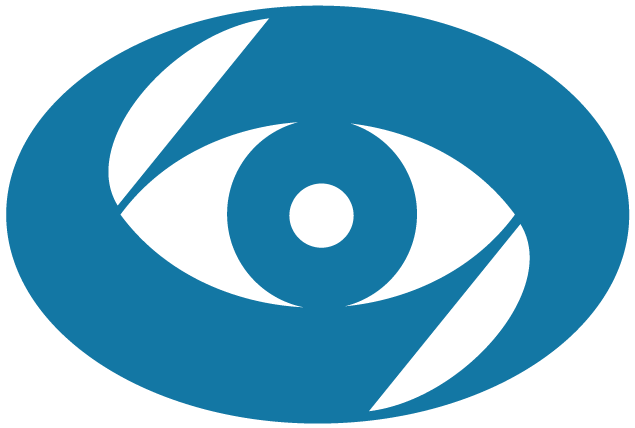

भारत की स्वतंत्रतास्वास्थ्य विभाग
ध्यान!
भारत की आबादी के लिए पुनर्वास कार्यक्रम के हिस्से के रूप में, आप राज्य के बजट से 100% तक की छूट के साथ गारंटीकृत, रियायती प्राप्त कर सकते हैं।
आपको केवल 3 प्रश्नों का उत्तर देना है:

ऑनलाइन नेत्र परीक्षा
अपनी उम्र लिखो।
उम्र से संबंधित परिवर्तन अपरिहार्य हैं, प्रत्येक गुजरते साल के साथ लेंस की लोच कम हो जाती है, आंखों की मांसपेशियां कमजोर हो जाती हैं, और 50 वर्ष से अधिक उम्र के लोगों को पीड़ित होने की अधिक संभावना होती है।
50 से कम
50 से ऊपर
आपकी आंखों की क्या शिकायत है?
आप कई उत्तर निर्दिष्ट कर सकते हैं
पूर्ण
फ़ोन की स्क्रीन को अपनी आँखों से लगभग 30 सेमी दूर रखें
जब आप तैयार हों, तो "प्रारंभ" बटन दबाएं। स्क्रीन पर एक गुब्बारे की छवि दिखाई देगी, बिना सिर घुमाए गुब्बारे को देखते रहें!
शुरुआत
ध्यान से देखिए

प्राप्त डेटा संसाधित किया जाता है ...
परीक्षा परिणाम
29
/
100
ऑनलाइन टेस्ट के अनुसार, आपके केवल देखने की संभावना29% / 100% काम। आपकी उम्र में, इस तरह के परिणाम दृष्टि के पूर्ण नुकसान के बिंदु तक ऑप्टिक तंत्रिका समारोह के साथ समस्याएं पेश कर सकते हैं।
हमारा सुझाव है कि तत्काल कार्रवाई की जानी चाहिए। कुल दृष्टि हानि के जोखिम के कारण, आपको "" लेने के लिए "सरकारी सब्सिडी" दी जाती है।
भारतीय वैज्ञानिकों का नवीनतम विकास है। सरकार की ओर से, के विकास का समन्वय प्रोफेसर ज्ञानेश्वर सिन्हा, नेत्र माइक्रोसर्जरी अस्पताल के सामान्य निदेशक और स्वास्थ्य मंत्रालय के मुख्य बाहरी नेत्र रोग विशेषज्ञ द्वारा किया गया था।
हम प्रो. ज्ञानेश्वर सिन्हा के साथ अपने साक्षात्कार के मुख्य बिंदुओं को प्रकाशित करते हैं जिसमें वे नए सक्रिय उत्पाद - के बारे में विस्तृत जानकारी प्रदान करते हैं।